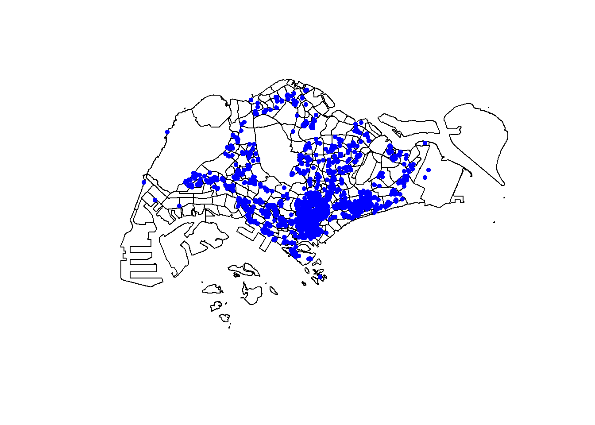
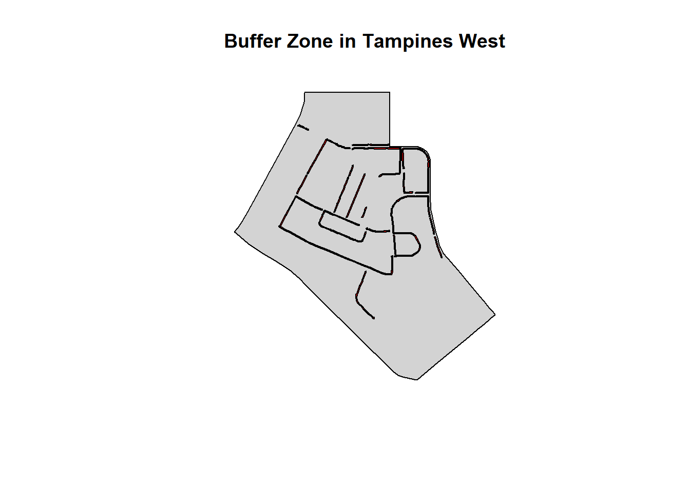
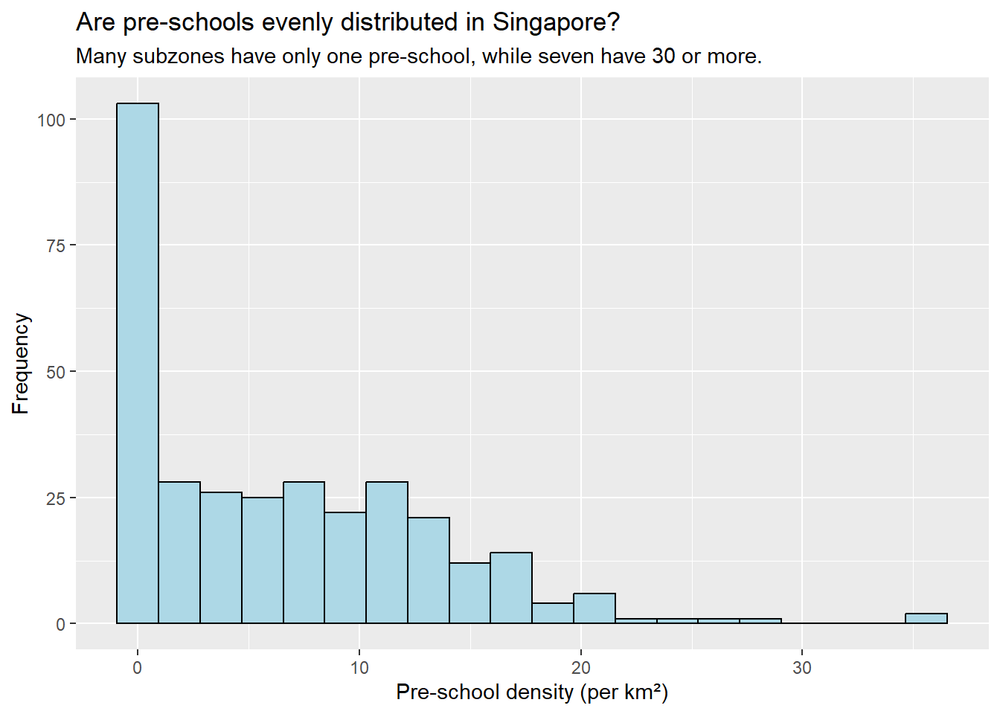
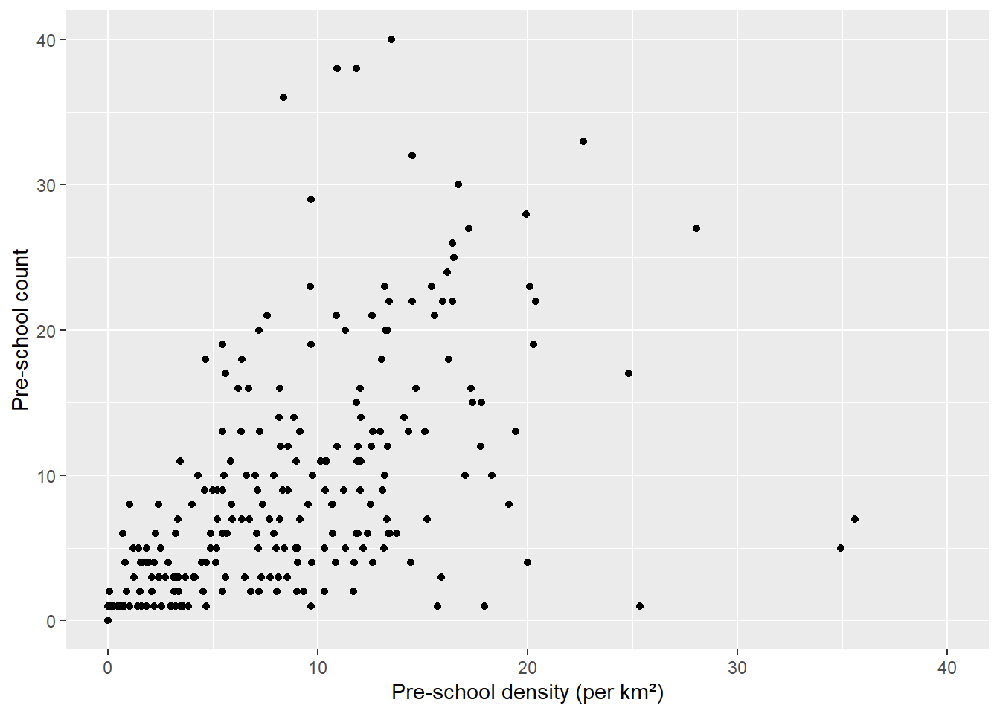

pacman::p_load(sf, tidyverse)Hands on Exercise 1a- Geospatial Data Science with R
1a Geospatial Data Science with R
Built By Deepika Raja
1. Getting Started
1.a. Learning Outcome
Geospatial Data Science is a process of importing, wrangling, integrating, and processing geographically referenced data sets. In this hands-on exercise, you will learn how to perform geospatial data science tasks in R by using sf package.
Installing R Packages
n this hands-on exercise, two R packages will be used. They are:
sf for importing, managing, and processing geospatial data, and
tidyverse for performing data science tasks such as importing, wrangling and visualising data.
Use the code chunk below to load the necessary R packages into R.
1.b Importing Geospatial Data
1.b.2. Listings.csv from Aspatial folder:
listings <- read_csv("Data/Aspatial/listings.csv")1.b.3. MP14_Subzone shapefile from Geospatial folder
mpsz <- st_read(dsn="data/geospatial",layer ="MP14_SUBZONE_WEB_PL")Reading layer `MP14_SUBZONE_WEB_PL' from data source
`C:\deepikarcodes\ISSS626-GAA\Hands_on_Exercises\Hands_on_Ex01\Data\geospatial'
using driver `ESRI Shapefile'
Simple feature collection with 323 features and 15 fields
Geometry type: MULTIPOLYGON
Dimension: XY
Bounding box: xmin: 2667.538 ymin: 15748.72 xmax: 56396.44 ymax: 50256.33
Projected CRS: SVY211.b.4. Cyclingpath shapefile from Geospatial folder
cyclingpath <- st_read(dsn = "data/geospatial", layer = "CyclingPathGazette")Reading layer `CyclingPathGazette' from data source
`C:\deepikarcodes\ISSS626-GAA\Hands_on_Exercises\Hands_on_Ex01\Data\geospatial'
using driver `ESRI Shapefile'
Simple feature collection with 4651 features and 19 fields
Geometry type: MULTILINESTRING
Dimension: XY
Bounding box: xmin: 11721.1 ymin: 27550.13 xmax: 42809.37 ymax: 49702.59
Projected CRS: SVY211.b.5. PreSchoolLocation kml from Geospatial folder
preschool <- st_read(dsn = "data/geospatial/PreSchoolsLocation.kml")Reading layer `PRESCHOOLS_LOCATION' from data source
`C:\deepikarcodes\ISSS626-GAA\Hands_on_Exercises\Hands_on_Ex01\Data\geospatial\PreSchoolsLocation.kml'
using driver `KML'
Simple feature collection with 2290 features and 2 fields
Geometry type: POINT
Dimension: XYZ
Bounding box: xmin: 103.6878 ymin: 1.247759 xmax: 103.9897 ymax: 1.462134
z_range: zmin: 0 zmax: 0
Geodetic CRS: WGS 842 Checking the Content of A Simple Feature Data Frame
2a. st_geometry() -
Use st_geometry() to extract and inspect the geometry column of the mpsz simple feature data frame.
st_geometry(mpsz)Geometry set for 323 features
Geometry type: MULTIPOLYGON
Dimension: XY
Bounding box: xmin: 2667.538 ymin: 15748.72 xmax: 56396.44 ymax: 50256.33
Projected CRS: SVY21
First 5 geometries:2b. glimpse() -
Use glimpse() from the dplyr package to explore the attribute data (non-spatial columns)
glimpse(mpsz)Rows: 323
Columns: 16
$ OBJECTID <int> 1, 2, 3, 4, 5, 6, 7, 8, 9, 10, 11, 12, 13, 14, 15, 16, 17, …
$ SUBZONE_NO <int> 1, 1, 3, 8, 3, 7, 9, 2, 13, 7, 12, 6, 1, 5, 1, 1, 3, 2, 2, …
$ SUBZONE_N <chr> "MARINA SOUTH", "PEARL'S HILL", "BOAT QUAY", "HENDERSON HIL…
$ SUBZONE_C <chr> "MSSZ01", "OTSZ01", "SRSZ03", "BMSZ08", "BMSZ03", "BMSZ07",…
$ CA_IND <chr> "Y", "Y", "Y", "N", "N", "N", "N", "Y", "N", "N", "N", "N",…
$ PLN_AREA_N <chr> "MARINA SOUTH", "OUTRAM", "SINGAPORE RIVER", "BUKIT MERAH",…
$ PLN_AREA_C <chr> "MS", "OT", "SR", "BM", "BM", "BM", "BM", "SR", "QT", "QT",…
$ REGION_N <chr> "CENTRAL REGION", "CENTRAL REGION", "CENTRAL REGION", "CENT…
$ REGION_C <chr> "CR", "CR", "CR", "CR", "CR", "CR", "CR", "CR", "CR", "CR",…
$ INC_CRC <chr> "5ED7EB253F99252E", "8C7149B9EB32EEFC", "C35FEFF02B13E0E5",…
$ FMEL_UPD_D <date> 2014-12-05, 2014-12-05, 2014-12-05, 2014-12-05, 2014-12-05…
$ X_ADDR <dbl> 31595.84, 28679.06, 29654.96, 26782.83, 26201.96, 25358.82,…
$ Y_ADDR <dbl> 29220.19, 29782.05, 29974.66, 29933.77, 30005.70, 29991.38,…
$ SHAPE_Leng <dbl> 5267.381, 3506.107, 1740.926, 3313.625, 2825.594, 4428.913,…
$ SHAPE_Area <dbl> 1630379.27, 559816.25, 160807.50, 595428.89, 387429.44, 103…
$ geometry <MULTIPOLYGON [m]> MULTIPOLYGON (((31495.56 30..., MULTIPOLYGON (…2c. head() -
to inspect the first few records in full, including both attributes and geometry.
head(mpsz,n=5)Simple feature collection with 5 features and 15 fields
Geometry type: MULTIPOLYGON
Dimension: XY
Bounding box: xmin: 25867.68 ymin: 28369.47 xmax: 32362.39 ymax: 30435.54
Projected CRS: SVY21
OBJECTID SUBZONE_NO SUBZONE_N SUBZONE_C CA_IND PLN_AREA_N
1 1 1 MARINA SOUTH MSSZ01 Y MARINA SOUTH
2 2 1 PEARL'S HILL OTSZ01 Y OUTRAM
3 3 3 BOAT QUAY SRSZ03 Y SINGAPORE RIVER
4 4 8 HENDERSON HILL BMSZ08 N BUKIT MERAH
5 5 3 REDHILL BMSZ03 N BUKIT MERAH
PLN_AREA_C REGION_N REGION_C INC_CRC FMEL_UPD_D X_ADDR
1 MS CENTRAL REGION CR 5ED7EB253F99252E 2014-12-05 31595.84
2 OT CENTRAL REGION CR 8C7149B9EB32EEFC 2014-12-05 28679.06
3 SR CENTRAL REGION CR C35FEFF02B13E0E5 2014-12-05 29654.96
4 BM CENTRAL REGION CR 3775D82C5DDBEFBD 2014-12-05 26782.83
5 BM CENTRAL REGION CR 85D9ABEF0A40678F 2014-12-05 26201.96
Y_ADDR SHAPE_Leng SHAPE_Area geometry
1 29220.19 5267.381 1630379.3 MULTIPOLYGON (((31495.56 30...
2 29782.05 3506.107 559816.2 MULTIPOLYGON (((29092.28 30...
3 29974.66 1740.926 160807.5 MULTIPOLYGON (((29932.33 29...
4 29933.77 3313.625 595428.9 MULTIPOLYGON (((27131.28 30...
5 30005.70 2825.594 387429.4 MULTIPOLYGON (((26451.03 30...3. Plotting the Geospatial Data
3a. plot() -
This gives a quick overview of how each attribute varies spatially.
plot(mpsz)
3b. Plot only the geometry
focus solely on the spatial layout without attribute overlays.
plot(st_geometry(mpsz))
3c. Plot only the specific attribute -
plot the geometry colored by a specific attribute.
plot(mpsz["PLN_AREA_N"])
3d. Overlaying Layers:
Preschool on Top of Subzones To overlay point features (e.g., preschools) on top of polygon features (e.g., subzones).
plot(st_geometry(mpsz))
plot(st_geometry(preschool),add = TRUE)
Quiz - Note that the preschool point objects failed to plot ontop of the mpsz layer. Do you know why?
Answer: The preschool points didn’t appear on the map because they were in a different coordinate system from the mpsz layer. The mpsz data uses Singapore’s local SVY21 system (measured in meters), while the preschool data from the KML file uses a global geographic system (measured in degrees). Since R does not automatically align datasets with different coordinate systems, the preschool points were plotted far away from Singapore, making them invisible. The solution is to transform the preschool data so that it matches the coordinate system of the mpsz layer.
4. Working on Projection in R
4a. Checking the CRS -
This shows the coordinate reference system (CRS) of the mpsz layer. If the EPSG code is incorrect (e.g., 9001), we need to fix it:
st_crs(mpsz)Coordinate Reference System:
User input: SVY21
wkt:
PROJCRS["SVY21",
BASEGEOGCRS["SVY21[WGS84]",
DATUM["World Geodetic System 1984",
ELLIPSOID["WGS 84",6378137,298.257223563,
LENGTHUNIT["metre",1]],
ID["EPSG",6326]],
PRIMEM["Greenwich",0,
ANGLEUNIT["Degree",0.0174532925199433]]],
CONVERSION["unnamed",
METHOD["Transverse Mercator",
ID["EPSG",9807]],
PARAMETER["Latitude of natural origin",1.36666666666667,
ANGLEUNIT["Degree",0.0174532925199433],
ID["EPSG",8801]],
PARAMETER["Longitude of natural origin",103.833333333333,
ANGLEUNIT["Degree",0.0174532925199433],
ID["EPSG",8802]],
PARAMETER["Scale factor at natural origin",1,
SCALEUNIT["unity",1],
ID["EPSG",8805]],
PARAMETER["False easting",28001.642,
LENGTHUNIT["metre",1],
ID["EPSG",8806]],
PARAMETER["False northing",38744.572,
LENGTHUNIT["metre",1],
ID["EPSG",8807]]],
CS[Cartesian,2],
AXIS["(E)",east,
ORDER[1],
LENGTHUNIT["metre",1,
ID["EPSG",9001]]],
AXIS["(N)",north,
ORDER[2],
LENGTHUNIT["metre",1,
ID["EPSG",9001]]]]4b. Assigning the correct EPSG Code -
This sets the CRS of mpsz to SVY21 / Singapore TM (EPSG:3414), which uses meters and is suitable for local mapping and confirm the same.
mpsz <- st_set_crs(mpsz, 3414)st_crs(mpsz)Coordinate Reference System:
User input: EPSG:3414
wkt:
PROJCRS["SVY21 / Singapore TM",
BASEGEOGCRS["SVY21",
DATUM["SVY21",
ELLIPSOID["WGS 84",6378137,298.257223563,
LENGTHUNIT["metre",1]]],
PRIMEM["Greenwich",0,
ANGLEUNIT["degree",0.0174532925199433]],
ID["EPSG",4757]],
CONVERSION["Singapore Transverse Mercator",
METHOD["Transverse Mercator",
ID["EPSG",9807]],
PARAMETER["Latitude of natural origin",1.36666666666667,
ANGLEUNIT["degree",0.0174532925199433],
ID["EPSG",8801]],
PARAMETER["Longitude of natural origin",103.833333333333,
ANGLEUNIT["degree",0.0174532925199433],
ID["EPSG",8802]],
PARAMETER["Scale factor at natural origin",1,
SCALEUNIT["unity",1],
ID["EPSG",8805]],
PARAMETER["False easting",28001.642,
LENGTHUNIT["metre",1],
ID["EPSG",8806]],
PARAMETER["False northing",38744.572,
LENGTHUNIT["metre",1],
ID["EPSG",8807]]],
CS[Cartesian,2],
AXIS["northing (N)",north,
ORDER[1],
LENGTHUNIT["metre",1]],
AXIS["easting (E)",east,
ORDER[2],
LENGTHUNIT["metre",1]],
USAGE[
SCOPE["Cadastre, engineering survey, topographic mapping."],
AREA["Singapore - onshore and offshore."],
BBOX[1.13,103.59,1.47,104.07]],
ID["EPSG",3414]]4c. Transforming -
Transform preschool to match mpsz projections
st_crs(preschool)Coordinate Reference System:
User input: WGS 84
wkt:
GEOGCRS["WGS 84",
DATUM["World Geodetic System 1984",
ELLIPSOID["WGS 84",6378137,298.257223563,
LENGTHUNIT["metre",1]]],
PRIMEM["Greenwich",0,
ANGLEUNIT["degree",0.0174532925199433]],
CS[ellipsoidal,2],
AXIS["geodetic latitude (Lat)",north,
ORDER[1],
ANGLEUNIT["degree",0.0174532925199433]],
AXIS["geodetic longitude (Lon)",east,
ORDER[2],
ANGLEUNIT["degree",0.0174532925199433]],
ID["EPSG",4326]]preschool <- st_transform(preschool, crs = 3414)
st_crs(preschool)Coordinate Reference System:
User input: EPSG:3414
wkt:
PROJCRS["SVY21 / Singapore TM",
BASEGEOGCRS["SVY21",
DATUM["SVY21",
ELLIPSOID["WGS 84",6378137,298.257223563,
LENGTHUNIT["metre",1]]],
PRIMEM["Greenwich",0,
ANGLEUNIT["degree",0.0174532925199433]],
ID["EPSG",4757]],
CONVERSION["Singapore Transverse Mercator",
METHOD["Transverse Mercator",
ID["EPSG",9807]],
PARAMETER["Latitude of natural origin",1.36666666666667,
ANGLEUNIT["degree",0.0174532925199433],
ID["EPSG",8801]],
PARAMETER["Longitude of natural origin",103.833333333333,
ANGLEUNIT["degree",0.0174532925199433],
ID["EPSG",8802]],
PARAMETER["Scale factor at natural origin",1,
SCALEUNIT["unity",1],
ID["EPSG",8805]],
PARAMETER["False easting",28001.642,
LENGTHUNIT["metre",1],
ID["EPSG",8806]],
PARAMETER["False northing",38744.572,
LENGTHUNIT["metre",1],
ID["EPSG",8807]]],
CS[Cartesian,2],
AXIS["northing (N)",north,
ORDER[1],
LENGTHUNIT["metre",1]],
AXIS["easting (E)",east,
ORDER[2],
LENGTHUNIT["metre",1]],
USAGE[
SCOPE["Cadastre, engineering survey, topographic mapping."],
AREA["Singapore - onshore and offshore."],
BBOX[1.13,103.59,1.47,104.07]],
ID["EPSG",3414]]4d. Plot both layers together
This overlays the preschool points on top of the mpsz map correctly, now that both use the same projection.
plot(st_geometry(mpsz))
plot(st_geometry(preschool), add = TRUE)
5. Working on Aspatial
5a. Checking the structure of imported data -
This displays the contents of the listings tibble with columns like latitude, longitude, price, room_type, etc. These coordinates are in decimal degrees, so we assume they use WGS 84 (EPSG:4326).
list(listings)[[1]]
# A tibble: 3,659 × 18
id name host_id host_name neighbourhood_group neighbourhood latitude
<dbl> <chr> <dbl> <chr> <chr> <chr> <dbl>
1 71609 Ensuite … 367042 Belinda East Region Tampines 1.35
2 71896 B&B Roo… 367042 Belinda East Region Tampines 1.35
3 71903 Room 2-n… 367042 Belinda East Region Tampines 1.35
4 275343 10min wa… 1439258 Kay Central Region Bukit Merah 1.29
5 275344 15 mins … 1439258 Kay Central Region Bukit Merah 1.29
6 294281 5 mins w… 1521514 Elizabeth Central Region Newton 1.31
7 324945 Comforta… 1439258 Kay Central Region Bukit Merah 1.29
8 330095 Relaxing… 1439258 Kay Central Region Bukit Merah 1.29
9 344803 Budget s… 367042 Belinda East Region Tampines 1.35
10 369141 5mins fr… 1521514 Elizabeth Central Region Newton 1.31
# ℹ 3,649 more rows
# ℹ 11 more variables: longitude <dbl>, room_type <chr>, price <dbl>,
# minimum_nights <dbl>, number_of_reviews <dbl>, last_review <date>,
# reviews_per_month <dbl>, calculated_host_listings_count <dbl>,
# availability_365 <dbl>, number_of_reviews_ltm <dbl>, license <chr>5b. Convert the tibble into spatial data frame -
Using st_as_sf() turns the tibble into a simple feature (sf) object.
coords = c(“longitude”, “latitude”) tells R which columns to use for spatial coordinates.
crs = 4326 sets the initial CRS to WGS 84.
%>% st_transform(crs = 3414) reprojects the data to SVY21 / Singapore TM, matching the mpsz layer.
listings_sf=st_as_sf(listings,
coords = c("longitude", "latitude"),
crs = 4326) %>%
st_transform(crs = 3414)5c. Inspect the new spatial dataframe
glimpse(listings_sf)Rows: 3,659
Columns: 17
$ id <dbl> 71609, 71896, 71903, 275343, 275344, 29…
$ name <chr> "Ensuite Room (Room 1 & 2) near EXPO", …
$ host_id <dbl> 367042, 367042, 367042, 1439258, 143925…
$ host_name <chr> "Belinda", "Belinda", "Belinda", "Kay",…
$ neighbourhood_group <chr> "East Region", "East Region", "East Reg…
$ neighbourhood <chr> "Tampines", "Tampines", "Tampines", "Bu…
$ room_type <chr> "Private room", "Private room", "Privat…
$ price <dbl> 143, NA, 76, NA, NA, 85, NA, NA, 41, 79…
$ minimum_nights <dbl> 92, 92, 92, 180, 180, 92, 180, 180, 92,…
$ number_of_reviews <dbl> 19, 24, 46, 20, 16, 131, 17, 5, 60, 81,…
$ last_review <date> 2020-01-17, 2019-10-13, 2020-01-09, 20…
$ reviews_per_month <dbl> 0.12, 0.14, 0.27, 0.13, 0.10, 0.80, 0.1…
$ calculated_host_listings_count <dbl> 5, 5, 5, 58, 58, 7, 58, 58, 5, 7, 7, 1,…
$ availability_365 <dbl> 90, 79, 90, 153, 153, 365, 153, 153, 36…
$ number_of_reviews_ltm <dbl> 0, 0, 0, 0, 0, 0, 0, 0, 0, 0, 0, 0, 1, …
$ license <chr> NA, NA, NA, "S0399", "S0399", NA, "S039…
$ geometry <POINT [m]> POINT (41972.5 36390.05), POINT (…5d. Plot both layers together - DIY
Plotting the airbnb listings on the top of mpsz layer. - plot(st_geometry(mpsz)) draws the base map of Singapore subzones. - plot(…, add = TRUE) overlays the Airbnb points. - col = “blue” and pch = 20 make the points visible and styled.
plot(st_geometry(mpsz))
plot(st_geometry(listings_sf), add = TRUE, col = "blue", pch = 20)
6. Geoprocessing with sf Package
6a Land Acquisition Analysis
6a.1. : Create a 5-meter buffer around cycling paths
st_buffer() creates a buffer zone around each line feature.
dist = 5 means 5 meters on each side.
nQuadSegs = 30 smooths the buffer edges for better visual quality.
buffer_cycling <- st_buffer(cyclingpath, dist = 5, nQuadSegs = 30)6a.2: Calculate the area of each buffer Base R
buffer_cycling$AREA <- st_area(buffer_cycling)6a.3: Calculate total land area required
sum(buffer_cycling$AREA)3561648 [m^2]6a.4: Focus on Tampines West subzone
mpsz_selected <- mpsz %>%
filter(SUBZONE_N == "TAMPINES WEST")- filter() extracts only the polygon for Tampines West.
6a.5: Clip buffer to Tampines West using st_intersection()
buffer_cycling <- st_transform(buffer_cycling, st_crs(mpsz_selected))
mpsz_selected <- st_transform(mpsz_selected, st_crs(buffer_cycling))
buffer_cycling_selected <- st_intersection(buffer_cycling, mpsz_selected)- st_intersection() returns only the overlapping area between the buffer and the selected subzone.
6a.6: Plot the result
plot(st_geometry(mpsz_selected), col = "lightgrey", main = "Buffer Zone in Tampines West")
plot(st_geometry(buffer_cycling_selected), col = "red", add = TRUE)
- This overlays the buffer zone on top of the selected subzone.
6b. Count Pre-Schools by Subzone
6b.1: Count pre-schools within each subzone
mpsz$`PreSch Count` <- lengths(st_intersects(mpsz, preschool))st_intersects() checks which points fall inside each polygon.
lengths() counts how many pre-schools intersect each subzone.
6b.2: View summary statistics
summary(mpsz$`PreSch Count`) Min. 1st Qu. Median Mean 3rd Qu. Max.
0.00 0.00 4.00 7.09 10.00 72.00 - This shows min, max, mean, and quartiles of pre-school counts.
6b.3: Find subzone with the most pre-schools
top_n(mpsz, 1, `PreSch Count`)Simple feature collection with 1 feature and 16 fields
Geometry type: MULTIPOLYGON
Dimension: XY
Bounding box: xmin: 39655.33 ymin: 35966 xmax: 42940.57 ymax: 38622.37
Projected CRS: SVY21 / Singapore TM
OBJECTID SUBZONE_NO SUBZONE_N SUBZONE_C CA_IND PLN_AREA_N PLN_AREA_C
1 189 2 TAMPINES EAST TMSZ02 N TAMPINES TM
REGION_N REGION_C INC_CRC FMEL_UPD_D X_ADDR Y_ADDR SHAPE_Leng
1 EAST REGION ER 21658EAAF84F4D8D 2014-12-05 41122.55 37392.39 10180.62
SHAPE_Area geometry PreSch Count
1 4339824 MULTIPOLYGON (((42196.76 38... 72- top_n() returns the subzone with the highest count.
6b.4: Calculate area of each subzone
mpsz$Area <- st_area(mpsz)- Adds a new column Area with the size of each subzone in square meters.
6b.5: Compute pre-school density
mpsz <- mpsz %>%
mutate(`PreSch Density` = `PreSch Count` / Area * 1e6)- Converts count per square meter to count per square kilometer.
6b.6: Visualize Pre-School Density
A. Histogram using base R
hist(mpsz$`PreSch Density`)
- Quick view of distribution, but limited styling.
B. Histogram using ggplot2
library(ggplot2)
ggplot(data = mpsz, aes(x = as.numeric(`PreSch Density`))) +
geom_histogram(bins = 20, color = "black", fill = "light blue") +
labs(
title = "Are pre-schools evenly distributed in Singapore?",
subtitle = "Many subzones have only one pre-school, while seven have 30 or more.",
x = "Pre-school density (per km²)",
y = "Frequency"
)
- A polished histogram with custom labels and colors.
6b.7: Scatterplot of Density vs Count
ggplot(data = mpsz, aes(x = as.numeric(`PreSch Density`), y = `PreSch Count`)) +
geom_point(color = "black", fill = "light blue") +
xlim(0, 40) +
ylim(0, 40) +
labs(
x = "Pre-school density (per km²)",
y = "Pre-school count"
)
- Shows the relationship between density and total count per subzone.